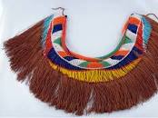

MOKOROTLO

Mokorotlo(Traditional hat)is a woven hat made from grass called mosea or leholi.
It is a national symbol of Lesotho and its people and it appears on the Lesotho's flag.
It shaped like a cone.
THETHANA
 Thethana is a traditional dress made from tsikitlane.
Thethana is worn by young basotho girls,worn until puberty.
SEBETO

Sebeto is a traditional dress worn by single women.
It is also worn by ladies who have completed their initiation school.
It is made from cowhide and
it is shorter than other cowhide dresses.
SEFATLA

Sefatla is a traditional shoes made from cowhide or ox facial skin.
They are traditionally worn by men during cold weather.